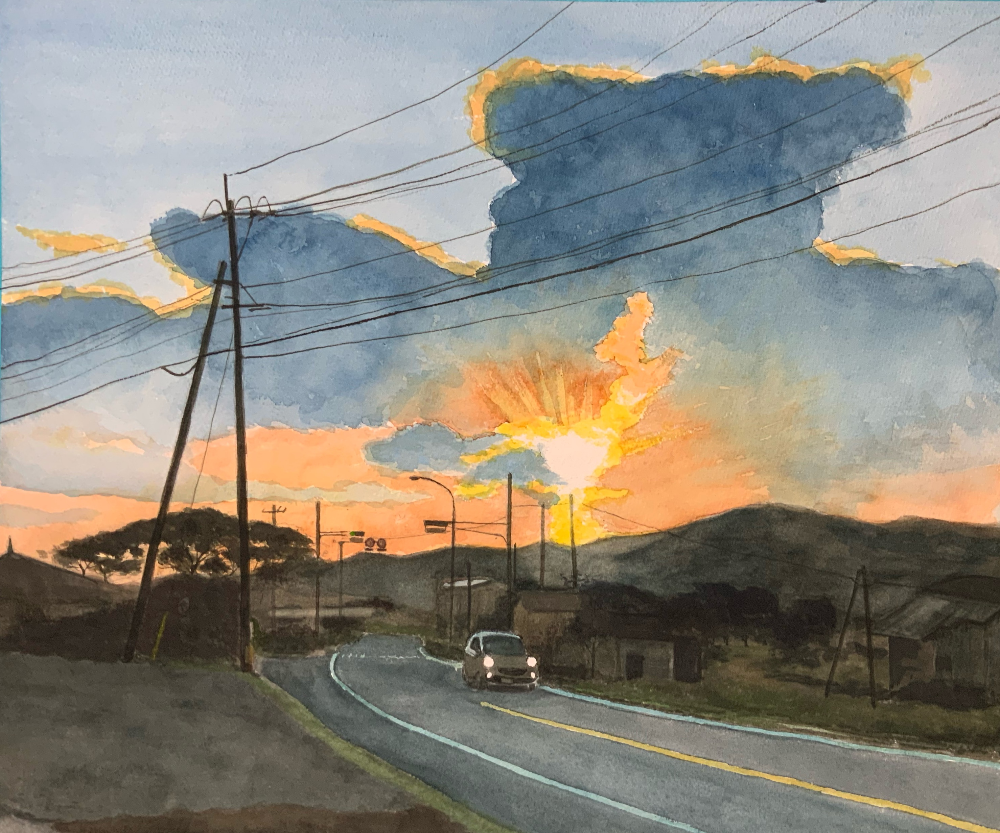

ようこそ
天草の山や海、のどかな港町をモチーフに、水彩で光と空気感を描いています。
また、AIを活用したアプリ制作にも取り組み、作品とともに発信しています。
新着情報
※ 管理用: data/news.json を作成すると自動表示されます- お知らせは準備中です。

絵を描くこと、学ぶこと、作ること
60歳から水彩画を始め、生成AIと出会ってからはPythonにも挑戦。
67歳で水彩画とAIアプリのホームページ公開へ――そんな歩みを、このサイトに込めています。
60歳から始めた水彩画
私は60歳で退職し、その後に水彩画を始めました。地元・天草の山や海、港町の風景、旅先で心に残った景色を、 水彩のにじみや重なりで表現することに魅力を感じながら、少しずつ描き続けています。
絵を描くことは、ただ風景を写すだけではなく、そのときの光、空気、気持ちまで残しておけるような喜びがあります。 このホームページでは、そんな作品の記録を大切に紹介していきたいと思っています。
ChatGPTとの出会いとAIへの挑戦
ChatGPTが公開されて半年ほどたった頃、私は生成AIに強く興味を持ちました。もともとパソコンやプログラムには関心がありましたが、 Pythonは初心者としてのスタートでした。それでも、AIに相談しながら少しずつ学ぶことで、今まで自分ひとりでは難しいと感じていたことにも 挑戦できるようになりました。
わからないことを一つずつ確かめながら進めるうちに、AIは単なる便利な道具ではなく、学びを後押ししてくれる心強い相棒のような存在になっています。
67歳でホームページ公開へ
67歳になった今、水彩画の作品だけでなく、自分で作ったアプリも合わせて、このホームページで公開していこうと考えています。 絵の世界と、AIを活用したものづくりの世界は、一見別のようでいて、どちらも「自分の中にあるイメージを形にする」という点でつながっているように感じます。
作品を描くことも、アプリを作ることも、どちらも日々の暮らしの中から生まれる創作です。このサイトでは、その両方を自然な形で紹介していきます。
これからの思い
年齢に関係なく、新しいことに挑戦できることを、自分自身で確かめながら歩んでいます。水彩画もAIも、始めたときは分からないことばかりでしたが、 続けていくうちに少しずつ形になってきました。
このホームページでは、作品を見ていただくだけでなく、「自分も何か始めてみよう」と思ってもらえるような場にしていきたいと考えています。 これからも、絵を描き、学び、作りながら、一歩ずつ前に進んでいきます。
新着作品
AIアプリ紹介
暮らしや仕事に役立つ
自作アプリ
AIのサポートを受けながら、日々の暮らしや仕事に役立つアプリを少しずつ作っています。 収支内訳書アプリをはじめ、実用的で使いやすい道具を目指して改良中です。
収支内訳書アプリを見る収支内訳書アプリ
誰でも簡単に収支内訳書が作れることを目指したWindows版アプリです。 入力・確認・出力を分かりやすくまとめ、はじめての方でも使いやすい形を目指しています。
- 収入・支出の入力
- 一覧で確認しやすい画面
- Windows版ダウンロード対応予定
📊 できること
・収支データ入力
・Excel自動作成
・初心者でも簡単操作
川端浩二
1957年12月生まれ。退職後は地元の絵画教室に週1回通い、水彩画を中心に制作しています。私が暮らす天草の山や海、のどかな港町の風景を描いています。
アーティスト・ステートメント
地元・天草の風や潮の匂い、時間の移ろいを、水彩のにじみや重ね塗りで表現しています。退職後に本格的に制作を始め、ペン画や鉛筆画、水彩スケッチなどにも取り組むことで、画材や手法の違いが生む表情の広がりを楽しんでいます。ひとつの絵にとどまらず、記憶の中の光景を何度も呼び戻しながら、山・海・港町の空気感を画面に定着させることを目指しています。
略歴
展示
- 大田アート教室作品展 出品（令和5年6月 / 2023年6月）
- 大田アート教室作品展 出品（令和6年10月 / 2024年10月）
- 大田アート教室作品展 出品（令和7年7月 / 2025年7月）
使用画材・技法
主な表現：水彩、ペン画、鉛筆画、水彩スケッチ。紙や絵具は作品に合わせて選択し、にじみとレイヤーで光と空気感を描いています。
お問い合わせ / リンク
ご感想・お問い合わせは mikan579@me.com までメールでお送りください。